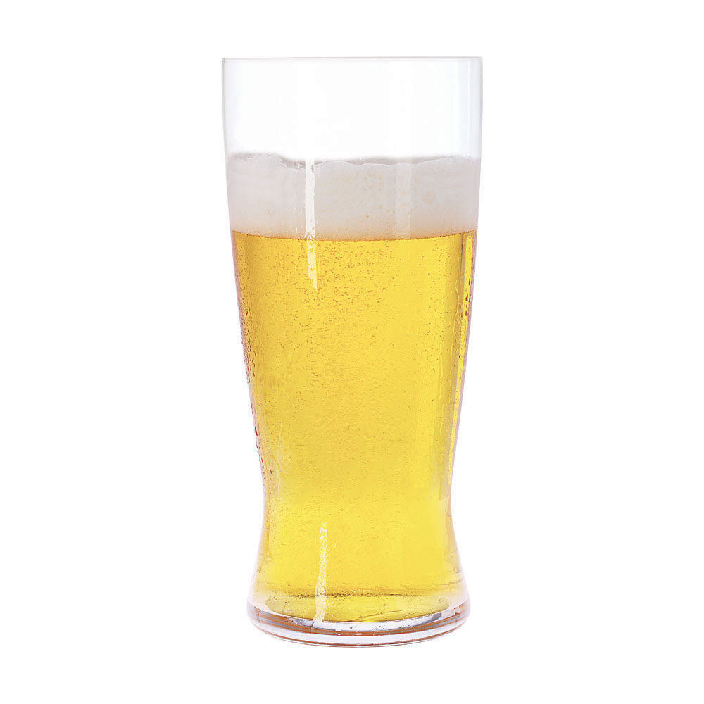
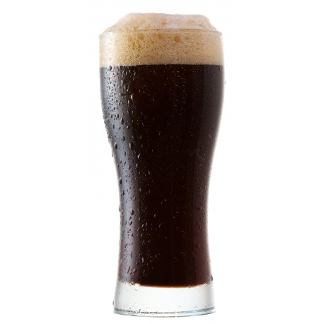
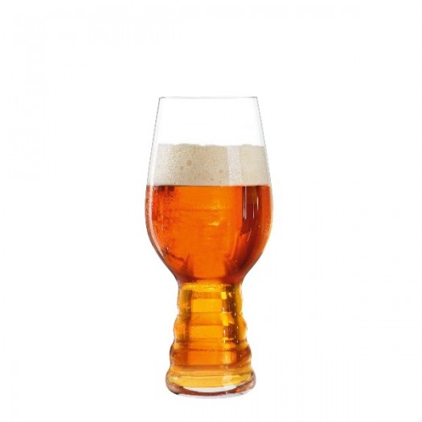
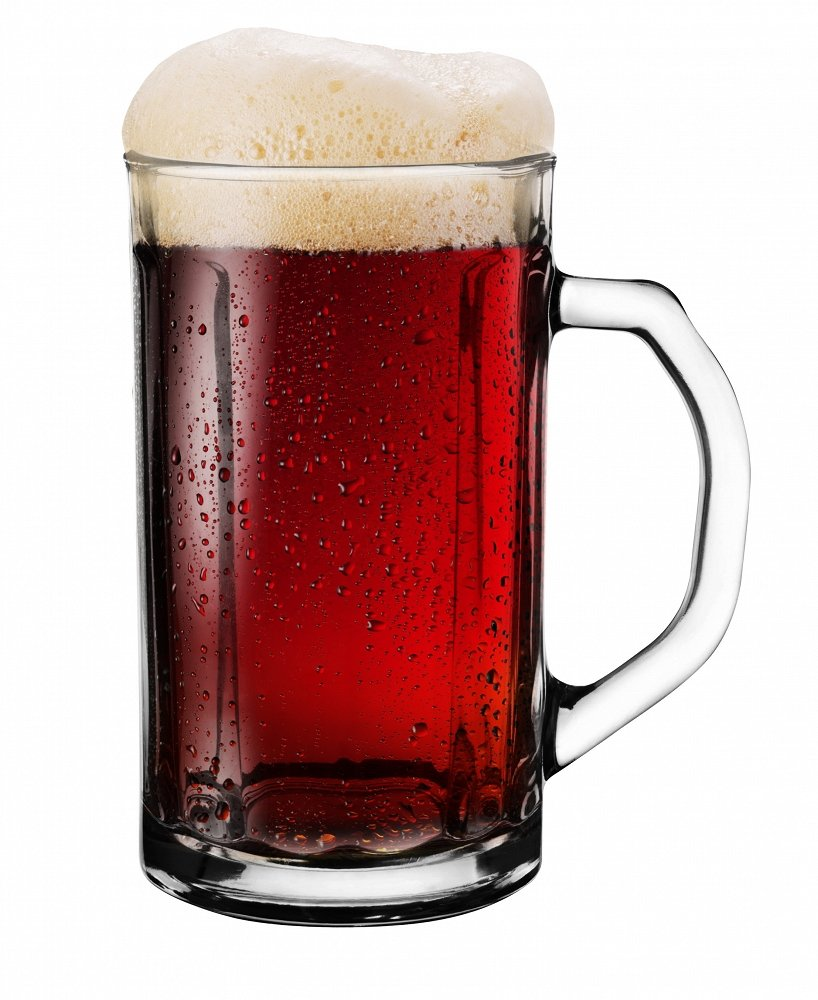
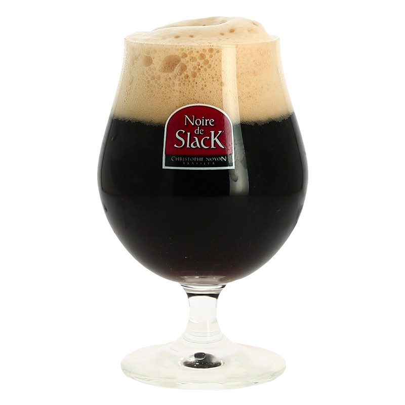
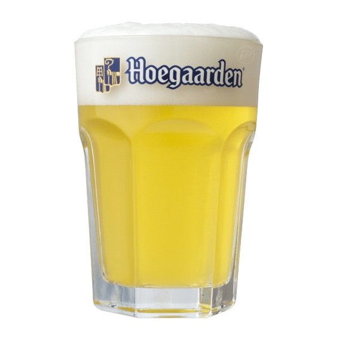

| Blonde |
Couleur jaune, légère |
Fruités, floraux |
Brassée avec des malt blonds pâles |
 |
| Brune |
Couleur très sombre |
Amertume, houblon, saveurs caramélisées |
Malt torréfié |
 |
| IPA (Indian Pale Ale) |
Taux d'alcool plutôt élevé, riche en houblon |
Très amère grâce à sa concentration en houblon |
Houblon, |
 |
| Rouge |
Fermentation mixte : mélange d'une partie "jeune" plus sucrée et d'une partie plus "vieille"
acidulée.
Couleur rouge caractéristique |
Sucrée, parfois aromatisée aux fruits rouges |
Généralement une bière classique laissée à macérer avec des fruits rouges |
 |
|
| Noire |
Très foncée, plusieurs types existants : Stout, Black Lager par exemple. |
Semblable à la brune, mais en bien plus puissant. |
Malt très torréfié |
 |
| Blanche |
Goût légé, n'est pas filtrée et doit son apparence à l'utilisation de froment. |
Rafraichissante, |
Malt très torréfié |
 |